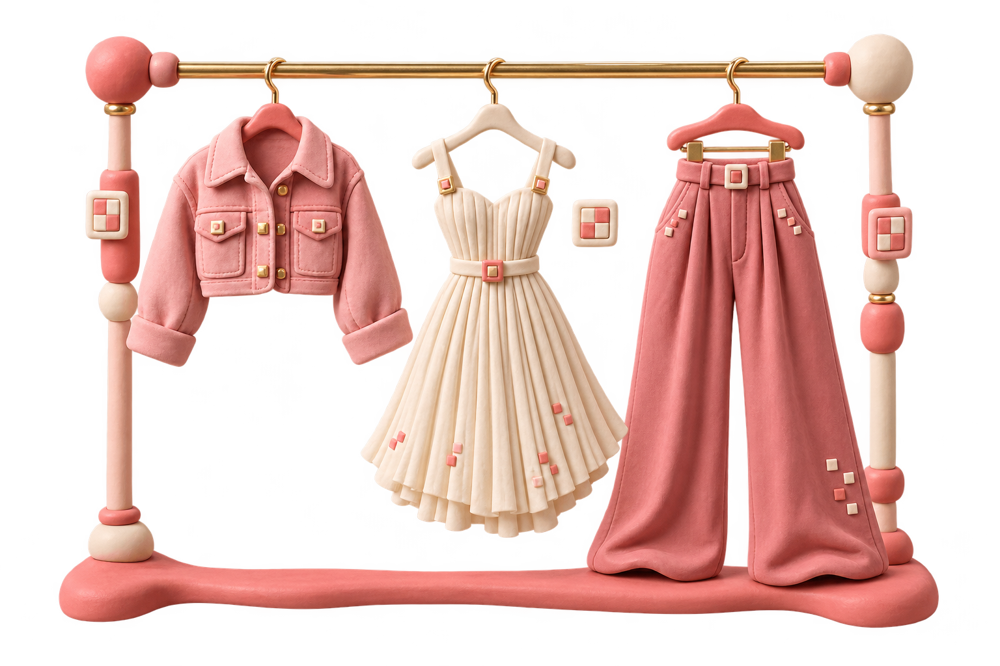
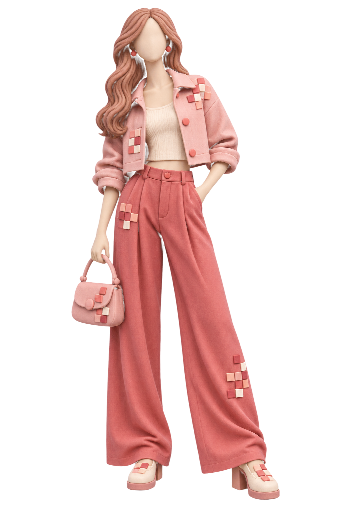
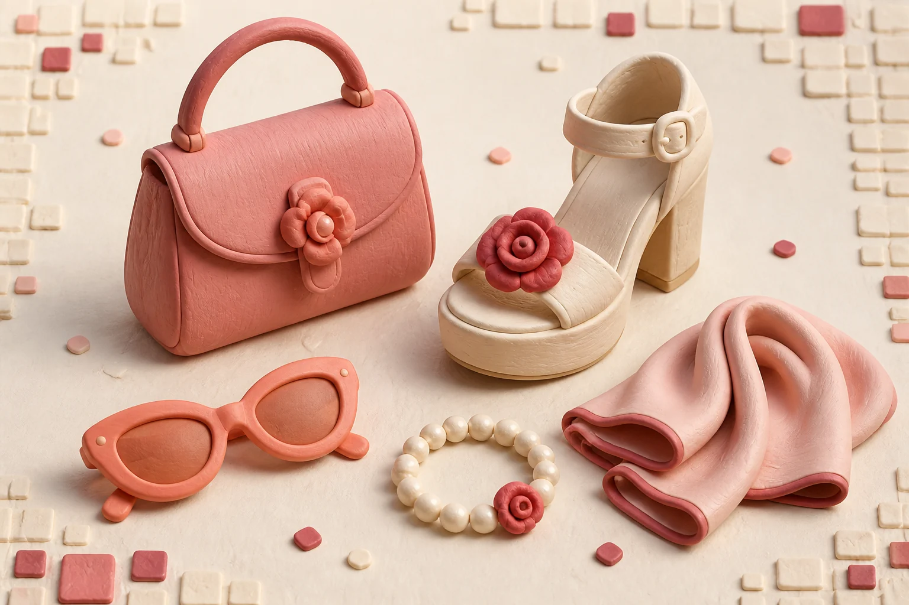

01 · DISCOVEREvery distinct look,
Every distinct look,
presented clearly.
Repeated frames are grouped while individual garments remain separate.
YOUR PRIVATE DIGITAL WARDROBE
Paste a public Instagram reel or post, pick the outfit you mean, and let YouCam fit it to your photo—before we turn it into a view you can explore from every angle.

VIRTUAL FITVIEW IN 3DONE POST · EVERY POSSIBILITY
Parallax reviews the post, separates distinct looks, and presents each option clearly before your fitting begins.

Repeated frames are grouped while individual garments remain separate.
YouCam applies only the outfit you have selected.
Review twelve coherent views and open the result in 3D.
ONE CLEAR FLOW
Choose a clear, front-facing image with your face and outfit visible.
Paste a public Instagram link or upload a saved outfit image.
Review the virtual fitting for identity, garment placement, and color.
View consistent angles and open the completed interactive 3D look.
A PRECISE OUTFIT SELECTION
Parallax reviews public frames, groups repeated views, and presents each distinct clothing option. Select the jacket, dress, trousers, or complete look before the YouCam fitting begins.
Select from a post →DETAILS DEFINE THE LOOK
Shape, color, material, and styling details work together. The fitting flow preserves the complete visual direction—from the garment to the accessories that make it distinctive.

Your reference photo remains the visual anchor for the final preview.
When several outfits appear, fitting begins only after your selection.
Rotate, zoom, relight, and download directly from the studio.
CREATE YOUR NEXT LOOK
One photo and one outfit reference become a complete virtual fitting powered by YouCam.
Enter the fitting room →